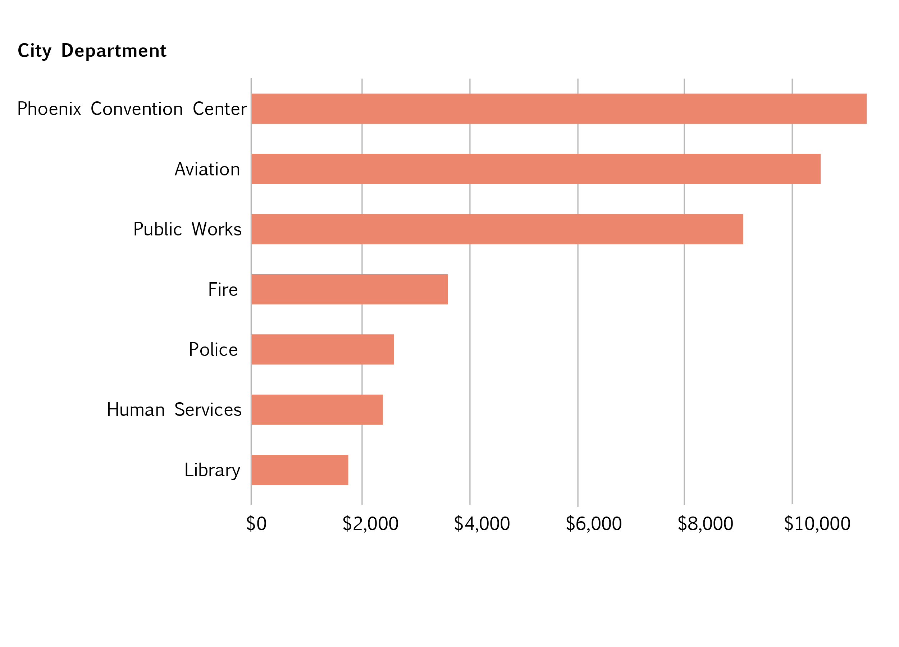
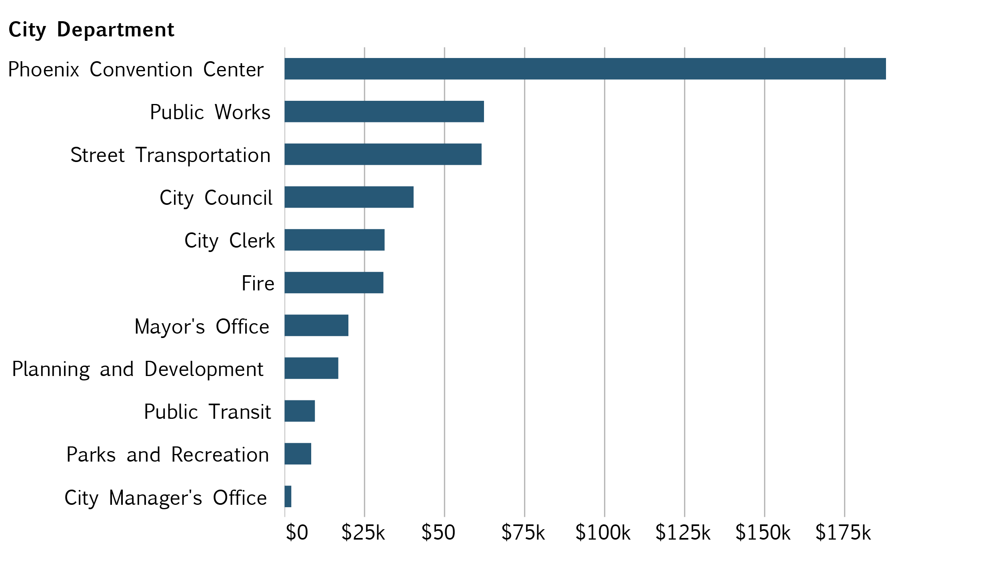
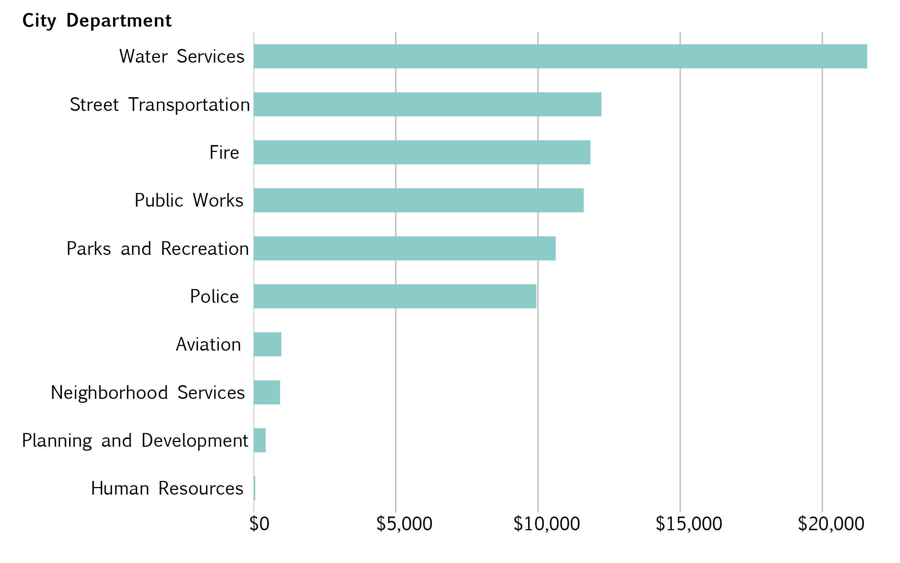

Does something stink?
BY Veronica Penney
Published August 30, 2018
Welcome to an entire page of uncontextualized observations. This project examines the city of Phoenix's checkbook for January through June of 2017. The checkbook is simply an account of paid invoices (and sometimes, payments made to the city, or refunds) for the time period. Without any real knowledge of how much is normally spent on operating expenses, or even a ballpark idea of how much money a given type business spends on office supplies per employee per year, this page will primarily serve as a sampling of observations, which may or may not actually be interesting.
Department air freshener expenses
Total dollars paid to Arizona Air Scent through invoices, from January through June, 2017.
SOURCE: Phoenix Open Data - City Checkbook
Arizona Air Scent specializes in odor control and air freshener systems. It fits that the Phoenix Convention Center would need a lot of odor control for the event space's presumably numerous bathrooms. It appears that Sky Harbor International Airport's expenses are paid by the City of Phoenix, so assuming that the city is also covering operating expenses, well, the airport probably needs a lot of air fresheners, too. Phoenix Public Works handles trash and recycling for the city, which smells bad in that eternally hot, desert climate, so they probably need a little help with odor control as well.
Invoices get a bit more confusing when examining the amount that the fire department has paid Arizona Air Scent over a durationg of six months. The fire department has about 2,000 employees, yet spends more on odor control than the police department, which has around 4,000 employees--twice as many. What smells so bad at the fire stations that renders extensive odor control measures necessary? This, among other questions, will remain unanswered in this project.
Department temporary employment expenses
Total dollars paid to Allstaff Services Inc. for temp staff, from January through June, 2017.
SOURCE: Phoenix Open Data - City Checkbook
Here, we examine the amount of money paid to temporary employees by various city departments. Temporary employees make sense at the Phoenix Convention Center, where large events would require staff to pass out bracelets, act as security, scan tickets, man concessions booths, etc. Public works is somewhat more nebulous, but the use of temporary employees by the Department of Street Transportation is potentially alarming. It is possible that these employees were hired to help with invoicing or to complete administrative tasks, but it is equally possible that temporary employees are used to drive the city's busses, or possibly even conduct trains on the light rail. One possible conjecture is that licensed retirees help fill during driver shortages.
With no detailed description available in the city checkbook, this, too, shall remain a mystery.
Why not buy ice makers?
Total dollars paid to Reddy Ice Corporation from January through June, 2017.
SOURCE: Phoenix Open Data - City Checkbook
Ice. Let's talk about the use of ice in an arid, sweltering desert climate. It melts quickly. It probably costs a lot to transport, and it's possible that it's highly inefficient to transport during the sweltering summer months of Phoenix, when the temperature rarely dips below 90 degrees and often climbs above 105 degrees.
Why is the city spending tens of thousands of dollars on ice when they can purchase ice makers and avoid the tranportation and delivery charges associated with ice delivery? Who even knows.